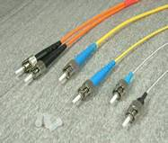
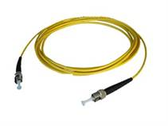

ST FIBER PATCH CORD

Twist-lock bayonet coupling mechanism which ensures quick, highly repeatable, low-loss connection
Simplex, duplex, and multi-ply fiber assemblies used for standard and customized shape configuration.
Single mode & Multi mode PC/UPC Polish
Comply with Telcordia GR-326-CORE specification and RoHS Standard
Specifications
Item |
Single mode |
Multi mode |
|
Fiber diameter |
9/125um |
62.5/125um 50/125um |
|
Insertion loss |
PC＜0.3dB |
PC＜0.3dB |
|
Return loss |
SM PC＞45 dB |
MM PC＞25 dB |
|
Insert–pull test |
(1000times) ＜0.3 dB |
||
Interchange |
＜0.2 dB |
||
Operation temperature |
-40℃ ~ +80℃ |
||